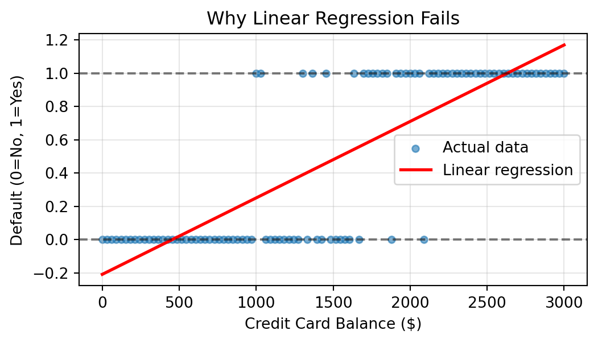
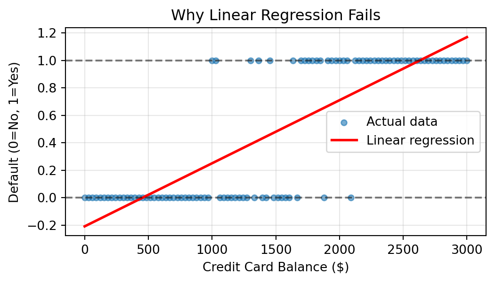
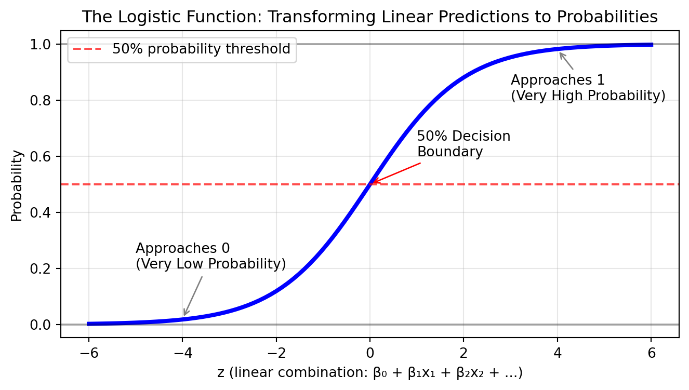
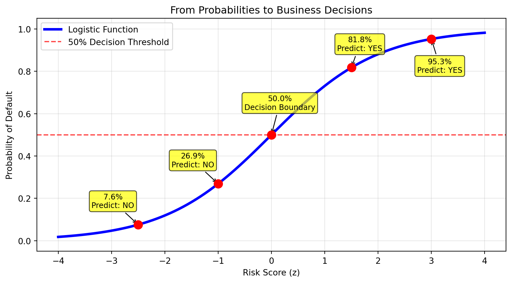
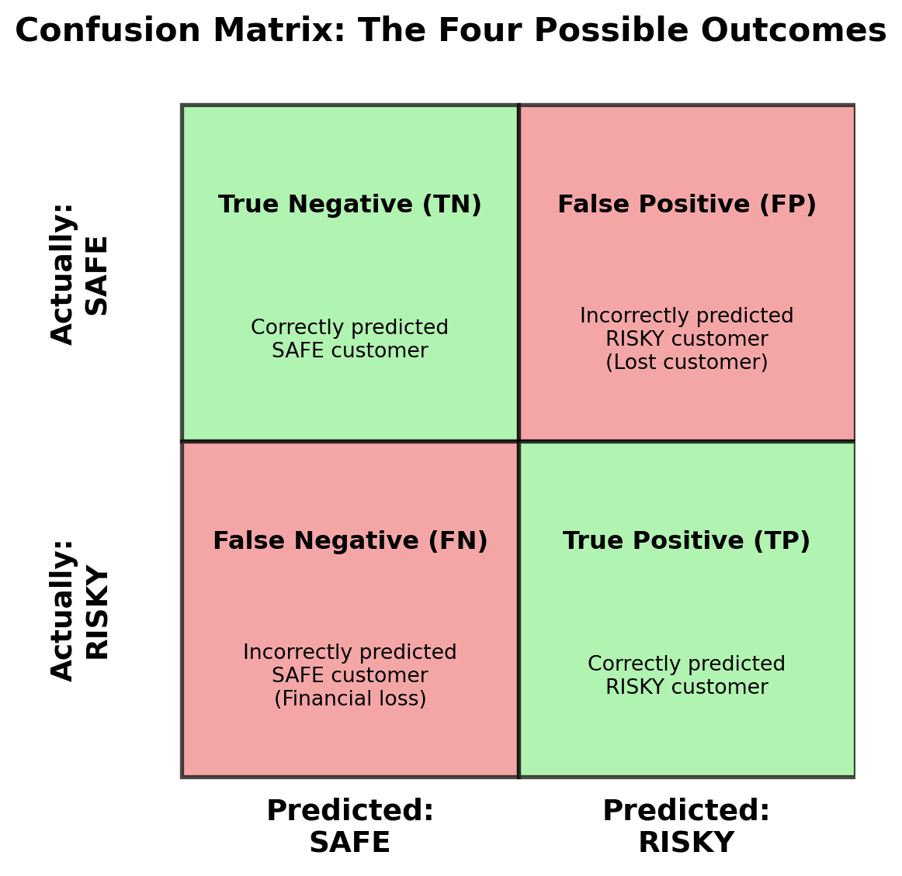

Introduction to Logistic Regression & Classification Evaluation
Quick overview of today’s plan:
Activity
Converse with your neighbor and identify…
Week 9 Review: We’ve been predicting continuous values…
Today’s New Challenge: Many critical decisions involve categories…
Rapid fire, classify each as REGRESSION or CLASSIFICATION:
In your groups, discuss where classification models are already impacting your daily lives:
Examples might include:
Share 2-3 examples with your group and discuss:
Problems with Linear Regression for Classification:
Example: Credit default prediction

Key Innovation: Transform linear predictions into probabilities using the logistic function:
\[p = \frac{1}{1 + e^{-z}}\]
where \(z = \beta_0 + \beta_1 x_1 + \beta_2 x_2 + ...\)
Tip
Does \(z\) look familiar? 🤔
This equation takes any number (our risk score \(z\)) and squeezes it between 0 and 1 to create a valid probability.
Magic Properties:

The S-shaped curve gives us two powerful tools for business decision-making:
1. Probability Estimates: Get the exact chance an event will happen (0-100%)
2. Binary Classifications: Make yes/no decisions using the 50% threshold

Key Insight: Every prediction gives you a probability between 0-100%, but the 50% threshold determines the final yes/no decision.
Now that you understand logistic regression gives us both probability estimates AND classifications, let’s think about when each is most valuable:
In your groups, identify:
Then discuss: Why do you think probability estimates are better for some situations while classifications are better for others?
Think about: Risk assessment, decision automation, customer communication, regulatory requirements, etc.
Then we’ll share examples with the class…
Step 1: Load and explore the ISLP Default dataset
| default | balance | income | |
|---|---|---|---|
| 0 | No | 729.526495 | 44361.625074 |
| 1 | No | 817.180407 | 12106.134700 |
| 2 | No | 1073.549164 | 31767.138947 |
| 3 | No | 529.250605 | 35704.493935 |
| 4 | No | 785.655883 | 38463.495879 |
Step 2: Fit the logistic regression model
from sklearn.linear_model import LogisticRegression
# Prepare features (balance and income) and target
X = Default[['balance', 'income']]
y = (Default['default'] == 'Yes').astype(int)
# Fit logistic regression model
model = LogisticRegression()
model.fit(X, y)
# Extract the coefficients
intercept = model.intercept_[0]
balance_coef = model.coef_[0][0]
income_coef = model.coef_[0][1]
print(f"Intercept: {intercept:.6f}")
print(f"Balance coefficient: {balance_coef:.6f}")
print(f"Income coefficient: {income_coef:.6f}")Intercept: -11.540468
Balance coefficient: 0.005647
Income coefficient: 0.000021So, what do these coefficients mean? 🤔
To interpret logistic regression coefficients, we need three related concepts:
| Probability | Odds | Log-Odds | Business Interpretation |
|---|---|---|---|
| 10% | 0.11 | -2.20 | Very unlikely event |
| 25% | 0.33 | -1.10 | Unlikely event |
| 50% | 1.00 | 0.00 | Neutral (decision boundary) |
| 75% | 3.00 | 1.10 | Likely event |
| 90% | 9.00 | 2.20 | Very likely event |
Key insight:
Logistic regression coefficients represent changes in log-odds, not probability!
Now we can understand what our coefficients mean:
Intercept (-11.540468):
Balance coefficient (0.005647):
Income coefficient (0.000021):
Business Translation:
Step 1: Use coefficients in the logistic function
Manual calculation: 0.1171Step 2: Compare with scikit-learn
Scikit-learn prediction: 0.1162Both give similar results for a customer with $1,500 balance and $50,000 income
Small Differences Expected
The manual calculation and scikit-learn prediction may differ slightly (e.g., 0.1171 vs 0.1162) due to rounding in the displayed coefficients. Scikit-learn uses the full precision coefficients internally.
Now that we’ve built our model, let’s evaluate how well it performs on new data:
from sklearn.model_selection import train_test_split
from sklearn.metrics import accuracy_score
# Split data into training and test sets
X = Default[['balance', 'income']]
y = (Default['default'] == 'Yes').astype(int)
X_train, X_test, y_train, y_test = train_test_split(
X, y, test_size=0.3, random_state=42, stratify=y
)
# Train the model on training data
model = LogisticRegression()
model.fit(X_train, y_train)
# Make predictions on test data
y_pred = model.predict(X_test)
# Calculate accuracy
accuracy = accuracy_score(y_test, y_pred)
print(f"Model Accuracy: {accuracy:.1%}")Model Accuracy: 97.1%Critical Question
With an accuracy of 97%+, should we base our model’s performance solely on this metric?
Is this a good model for our business needs?
Shocking Example: Credit card fraud detection with 100,000 transactions:
Two models:
Which would you choose for your business?
Important
The Problem: Model A provides ZERO business value but has higher accuracy!
The Confusion Matrix: Where Our Model Goes Wrong

Why These Errors Matter:
Key Insight: Better performance metrics focus on the errors that matter most to your business!
You work for a hospital developing an AI system to screen for early-stage cancer.
Business Context:
Error Costs:
Question?
Which error type should you prioritize minimizing? Why?
Answer: Minimize False Negatives - Missing cancer cases is life-threatening and costs 30x more than unnecessary tests. Better to have some false alarms than miss actual cancer.
You work for a bank building a fraud detection system for credit card transactions.
Business Context:
Error Costs:
Question?
Which error type should you prioritize minimizing? Why?
Answer: Minimize False Positives - Blocking legitimate customers causes immediate frustration and churn. $200 fraud loss is small compared to losing a customer relationship.
You work for a company planning targeted email marketing campaigns for product promotions.
Business Context:
Error Costs:
Question?
Should you focus on minimizing false positives, false negatives, or balance both equally? Why?
Answer: Balance both errors - False negatives cost 2.5x more ($5 vs $2), but both matter for campaign ROI. Need efficiency AND coverage for marketing success.
Beyond accuracy, we need metrics that align with business priorities:
Deep Dive in Your Reading
Each metric involves important mathematical formulas and trade-offs. Chapter 24 provides detailed explanations, examples, and business applications you’ll need for Thursday’s lab and upcoming assignments.
Focus on: confusion matrices, the derivative error metrics, and when to use each metric.
The key question: What business outcome are you optimizing?
Your turn to be the expert! For each scenario…
Scenarios:
For each:
Think about which errors you would want to minimize (or the evaluation metrics you’d want to use) and why?
Business-aligned metric selection:
1. Airport Security → Recall
2. Job Resume Screening → Precision
3. Product Quality Control → Recall
4. Customer Churn Prediction → F1-Score
5. Medical Diagnosis → Recall
Pattern:
Safety/compliance scenarios prioritize recall, efficiency scenarios prioritize precision, business optimization balances both.
This Week’s Lab Preview
In Thursday’s lab, you’ll get hands-on practice with:
Come prepared to apply today’s concepts in a medical diagnosis context!
Thursday Lab: Hands-On Classification with Medical Data
Homework: Thursday’s lab also serves as this week’s homework assignment
Office Hours & Resources
BANA 4080